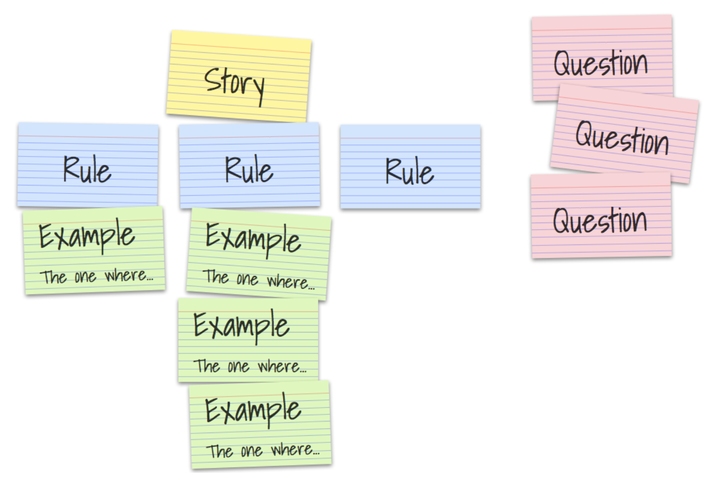

[Figure 1]
[Figure 1]A brief essay on Behavior-Driven Development
2020-12-06
The ultimate goal for every agile process is to turn work into value in a sustainable way. In the context of software engineering, humans automate solutions to problems by explaining them in much detail to machines, that do not have a common sense. Thus, the machines can solve the automatable problems and humans can focus on the not automatable tasks: To further explain the right solutions to problems to a machine in the right way. This discipline is software engineering. The result of explaining the right solution to a machine the right way is good software. In all of this there are (at least) two major problems:
Often communication between people is required before software can be built, because in many cases some people have the skills to explain a solution to a machine, and other people have a deep understanding of the solution itself. The classical approach to to solve this problem is called specification.
Sometimes people think that software work, but it doesn’t. While or after building software, some features might work at some point in time and then break without humans recognizing it. The software might stop (or even worse: not stop) in critical, unexpected moments which can cost, depending on the software, a lot of customers, money or even lifes. The common approach to solve this problem is called quality assurance (QA) and contains testing the software repeatedly.
The effects of these problems need to be discovered. In a waterfall-based approach the feedback cycle closes only after an increment went through specification, implementation and quality assurance, which means, that if any increment went off track, it will be discovered at a late point in time.
The fundamental idea of BDD is to focus on the behavior of a software system while moving the solutions to the above mentioned problems, specification and QA, closer together (Nagy and Rose 2018, 3). Thereby, the feedback cycle shortens and off-track increments are harder to produce and less impactful. In this essay I want to elaborate on how BDD leverages this idea into building sustainable software, which principles and tools it uses to do so and to what extent it can be assumed that BDD works.
** Disclaimer ** In this document I separate the terms for software engineering and QA, but it can be the same people practitioning them. The focus is on the discipline itself.
The annual “State of Agile” report started in 2007 and since then provides insights into the application of agile methodologies and practices over a large range of different companies worldwide. For the 14th State of Agile Report 1121 surveys were collected (“State of Agile 14th Report” 2020, 5) and for the Report from 2015 even 3880 surveys where collected (“State of Agile 10th Report” 2016, 2). The survey is handed out to agile practicioners and executives. It is aimed to be representative in terms of localization, company size and industries and it exists since more than 12 years, therefore it might contain a convincing insight into the employment of BDD, at least among the companies that participated in the survey. This table of percentual BDD employment per year shows a significantly growing application of BDD, especially since 2015. BDD appears to be of growing interest except for 2019.
| Report | BDD used by | Participants | BDD listed as |
|---|---|---|---|
| (“State of Agile 3rd Report” 2009) | 7% | 2319 | agile method |
| (“State of Agile 4th Report” 2010) | None | 2570 | agile technique |
| (“State of Agile 5th Report” 2011) | 9% | 4770 | agile technique |
| (“State of Agile 6th Report” 2012) | 9% | 6042 | agile technique |
| (“State of Agile 7th Report” 2013) | 10% | 4048 | agile technique |
| (“State of Agile 8th Report” 2014) | 12% | 3501 | agile technique |
| (“State of Agile 9th Report” 2015) | 9% | 3925 | agile technique |
| (“State of Agile 10th Report” 2016) | 10% | 3880 | agile technique |
| (“State of Agile 11th Report” 2017) | 16% | “thousands” | engineering practice |
| (“State of Agile 12th Report” 2018) | 17% | 1492 | engineering practice |
| (“State of Agile 13th Report” 2019) | 22% | 1319 | engineering practice |
| (“State of Agile 14th Report” 2020) | 19% | 1121 | engineering practice |
[Table 1]
BDD is listed under different captions: In the earlier surveys it was listed as an agile method, then it was listed as an agile technique and since 2016 it is listed as engineering practice.
Dan North describes in “Introducing BDD” (North, n.d.) how BDD is his response to TDD. In order to get a deeper understanding of what that means, we must have a closer look at TDD. TDD is a narrower approach than BD, in which mostly only technically focussed people are involved. The idea is to write a test that describes a feature which doesn’t exist yet, ensure it fails, and then implement that feature until the test does not fail anymore and refactor the code afterwards. After the new test is executed successfully, the code quality is on an acceptable level and none of the existing tests is broken, the developer can move on to the next test for the next feature. This test-first approach is mentioned in the early publications about Extreme Programming (Lindstrom and Jeffries 2004).
The term behavior-driven development, as it was introduced by Dan North in 2006 (North, n.d.), explicitly avoided the term “test” in order to keep business people engaged.[nagy2018discovery, p.10] This is a strong hint towards the most fundamental principle of BDD: bringing the specification and the quality assurance together or in other terms: “Bridging the Communication Gap,” which is the title of the book by Gojko Adzic (Adzic 2009) that describes a very similar idea which he names “specification by example” and “agile acceptance testing.”
According to the agile alliance glossary (“Glossary: TDD,” n.d.), common pitfalls of a TDD using team are a “poor maintenance of the test suite – most commonly leading to a test suite with a prohibitively long running time” which sometimes leads to a “abandoned test suite (i.e. seldom or never run)[…].” Dan North explains some further pitfalls, that range from the naming of the tests, which might cause some “false sense of security” (North, n.d.), to the scope and the actual functionality that needs to be tested. Thinking in terms of behavior solves these issues: The naming of an executable test is based on the behavior it should assure. The scope of the test is easier defined on the level of behavior (rather on the more technical level of test), because a behavior description has naturally a certain length and a functional scope that excludes all technical details. The question, which features should be tested, also became easier to answer: All of the behavior, that the software should have, needs to be tested. Lower level tests, which ensure the software uses a specific solution, step back and the testing scope shifts towards tests that describe the behavior of a system. Latter correlate to the original intent of writing the software and therefore are getting closer to stakeholders attention.
Concluding this chapter: BDD is a successor of TDD in its nature, but shifts its scope towards a more behavioral and less technical level. At the same time, TDD can be used inside of BDD, so that both layers are addressed at the same time (Nagy and Rose 2018, 15).
Examples are a mighty tool in BDD, which are used to illustrate business rules and therefore reduce the chance of misinterpreting them (Nagy and Rose 2018, 48). Therefore, one or more examples belong to one business rules.
Examples consist of a context, an action and an outcome. The context is the state of the system before the action is applied to it. The action is the stimulus that causes the system to react. It might be another system, some scheduled action or the user of the system. The outcome is the updated state of the system after the action has taken place (Nagy and Rose 2018, 43). It should focus on that part of the system that was influenced by the action, and does not need to contain irrelevant aspects. Moreover, an example always contains concrete data in contrast to variables. An example is what can be used to write a test for a system. One example of an example from the world of poker:
- Table is preflop
- Amy is on the button
- Amy has a stack of 50BB
- Bob is small blind
- Carl is big blind
- Amy has aces
- Bob and Carl post the blinds
* Amy raises 3BB
=> Raise is acceptedHere, the dashes stand for the context, the asterisk for the action and the bold arrow for the outcome.
The examples alone cannot describe the behavior of a system sufficiently. Therefore, the business rules exist, which are the abstract description of the general problem. A business rule is what gets implemented in the software. When defining a business rule, it is often the case that it is deduced from a concrete situation (= example) in which the system should behave in a specific way.
A scenario is a formalized interpretation of an example. To formalize the example, a business readable domain specific language (DSL) (Fowler 2008) is used to describe behavioral descriptions of a software system. Business Readable DSLs enable “deep and rich communication channel between software development and the underlying domain” (Fowler 2008). One example of such a DSL is the Gherkin language (Gherkin Reference, n.d.), which has only very few primary keywords:
Feature
Rule (as of Gherkin 6)
Example (or Scenario)
Given, When, Then, And, But for steps (or *)
Background
Scenario Outline (or Scenario Template)
Examplesand even less secondary keywords used for comments, tags, data tables and doc strings, which are not relevant for this principle. ‘scenario outline’ and ‘examples’ provide the possibility to loop through similar scenarios with different aspects of examples (similar to table tests), but are not of further interest at this point. Interestingly, the keywords ‘example’ and ‘scenario’ are used as synonyms here, which also indicates that they are very similar. An example for a specification that contains a feature, a rule and two scenarios from the world of poker is the following.
Feature: Pay the winner
Rule: Player with the best hand wins
Scenario: Last betting round over -- More than one player in the round
Given the last betting round is over
And there are two players in the round
When the showdown happens
And the first player shows a full house
And the second player shows a flush
Then the first player wins the pot
Scenario: Last betting round over -- Only one player in the round
Given the last betting round is over
And one player is in the round
Then the player will win the potThese two formalized examples are structurally similar to the examples that are defined above. One or multiple rules belong to one feature (which maps to a story in Scrum terminology), and one or multiple scenarios are subordinated to a rule. The scenarios have a context that start with “Given,” an action that start with “When” and a outcome, that starts with “Then.” The Gherkin language exists for different natural languages (english, german, …), and it is by design that the used keyword-structure is close to that of a natural language. The reason for that is the Gherkin language being the clue to a specification level that is both, executable as behavioral specification (using a BDD Tool like Cucumber) and at the same time readable for non-technically focussed business people.
Conclusively, a scenario is an example that is formalized by a business readable DSL like the Gherkin language. The working software is the formalization of the business rules, written in a (usually high-level) programming language like Scala, Java, C# etc. And just like the examples illustrate the business rules, scenarios illustrate the software itself. Before getting closer into the tips, tricks, tools, do and don’ts, I want to conclude this very key principle of BDD.
[Figure 1]
The goal of BDD is to engineer high-quality working software (top right). To get there, we start with examples, explained by business people and discussed with all roles that engage in the process. These are inter-humanly communicated behaviors that do not need to fulfill a highly formalized structure, other than describing the context, the action and the outcome. They get formalized with a business readable DSL (bottom right) and abstracted to business rules (top left). Both steps are taken in order to get to the top right corner of the image without disconnecting the specification and the actual software. This principle is executed repeatedly in very short feedback cycles, so that it proves the right understanding of the specification (which is the implementation) and having the right specification in place. The right software is built the right way.
In a waterfall world, the specification is not only specifying the functional aspects of a software system. It is also the main communication channel between business experts and software engineers and QA. Now, in a BDD world, this changes fundamentally. All three disciplines are involved in the creation, exploration, discussion and formalization of the specification, which makes it an agreement or a contract. Concerns from all disciplines can be stated early. If no concerns arise or all concerns can be resolved, the business experts can be more confident about the functional consistency, technical feasibility and (automated) testibility. The chance of misinterpretation is reduced, while every discipline is protected by the formalization of the specification. If against all odds something was implemented the wrong way, the specification will highlight this to the development team quickly, and if it doesn’t, then people from QA and business will.
There are three main roles in BDD: business experts (also referred to as business people), software engineers (which form the development team) and quality assurance people/testers. The roles themselves are neither new nor unique to BDD, but by having people from all 3 disciplines collaborating together, they get a better understanding of each others roles rather than only the interfaces between the roles.
[Figure 2]
Moreover, the ‘borders’ of the responsibility per roles blur. Software engineers and testers are invited to participate in the specification process and business experts are invited to contribute to the formal specification which is executable test code. This increases empathy and motivation, because everyone is involved in the product, not only in a specific discipline.
This chapter describes some practicle tricks and concrete practices that help applying BDD. They do follow the principles of BDD but are no principles. Moreover, these techniques might evolve with a higher speed than the principles themselves.
Since scenarios are examples that are formalized by a business readable DSL, but are contentwise similar, they are considered synonym for the following section. In a Cucumber.io article (Rose 2019), Seb Rose describes the traits of a good scenario with the combined acronym BRIEF.
Using the (1) business language in scenarios aims to keep the business people engaged and to bring it more into line with the actual software. (2) Real data should be used for scenarios to reveal the intention of it. Another way of revealing the intention of a scenario is by focusing on (3) revealing the intent of the aspect of a system, rather than on the mechanics that lead to that result. This applies to the name of a scenario just as much as to the content. Focussing a scenario onto only the (4) essential parts of an illustrated business rule means to remove everything that does not directly contribute to the readers understanding of the system. Moreover, one scenario should (5) focus on describing only one business rule. Therefore it is possible to describe a scenario in a (6) brief way, which makes a scenario easier to understand and discuss for people of all roles.
The meeting, in which business experts, software engineers and QA collaborate to discover the specification, is called ‘Three Amigos’ (“Glossary: Three Amigos,” n.d.), ‘specification workshop,’ ‘backlog refinement’ or ‘requirement workshop’ (Nagy and Rose 2018, 24). The meeting aims to discuss and explore stories brought in by the business representants, and to illustrate it with concrete examples. Although the length of such a meeting is not specified in general, it applies that the more frequently it is done, the shorter it can be. The method called ‘Example Mapping’ (Wynne 2015) can provide structure and guidance through the process. It basically defines four kinds of entities: examples, rules, questions and user stories. Starting with a user story, written on a yellow index card, the already known rules for it are written on blue index cards right below. For each rule, examples are written on green index cards while questions, that cannot be answered within the meeting, materialize on red index cards.
 [Figure 3](Wynne 2015)
The cards are written as the conversation unfolds, and thereby “build up a visual representation on the table in front of us reflecting back our current understanding of the story” (Wynne 2015). Alternatively it is possible to write the specification directly in Gherkin language in the meeting, but it might not be fast enough for the discussion and cause distraction.
Conclusion: The requirement workshop is executed repeatedly and involves business people, software engineers and QA. The workshop aims to zoom in and discuss specification in much detail.
Although applying BDD does not require the usage of high-level tools such as Cucumber, SpecFlow, Behat, GoDog etc., it is common and useful to do that. A lot of those tools are based on Cucumber, a list of different implementations and their corresponding officiality can be found here on Cucumbers installation page (“Installation,” n.d.). For most common programming languages and platforms a Cucumber-based implementation exists.
Cucumber uses the Gherkin language and supports connecting specification statements from a .feature file with the corresponding step definitions, which execute the actual code to trigger and assert a specific behavior. A step definition is the detailed mapping of how a statement in the .feature file (which is the specification) maps to functions and assertions in the actual software. Regular expressions are used to match the sentences and extract the parameters out of them.
And there are 2 players in the roundIn this short example, the following step definition would match the action of creating a table with a certain amount of players and extract the amount of players as parameter, so that it can be reused for all different amounts of players (in the range of int).
And("There are {int} players in the round") { numberOfPlayers: Int =>
Table(numberOfPlayers = numberOfPlayers)
}Depending on the application of the software system, step definitions can have all shapes and colors: They might be calling methods, find HTML elements in a browser, send a HTTP request, create objects and many more.
Although the usage of a BDD tool is recommended, it is not required. Tools support the application of the principles, therefore a deep understanding of the principles is a prerequisite to productive usage of tools. “One typical mistake is to see BDD as a tool-thing. BDD is primarily about collaboration and domain discovery; any “BDD tool” can be only useful in supporting this process." (Nagy and Rose 2018, 4).
The most obvious advantage of applying BDD is stated as a principle above already: The disciplines of specification and QA, which are in waterfall-based world known as being far apart from each other, collaborate directly. The development department’s turn is (time- and communicationwise) not between specification and QA anymore, it is now collaborating with both and helps them to collaborate with each other. By working together repeatedly when writing executable specification, thus by putting the behavior of the system in the focus of everyone, an ubiquitous language (Evans 2004, 32ff) evolves naturally, which helps the team to communicate more effectively and avoids misunderstandings. By having a language in place, that enables the business people to read a formal specification, the chance for misunderstandings is reduced even more. Moreover, by inviting QA and development to participate in the specification process, the identification with the product as a whole is increased, which influences the performance positively.
The key motivation to invest time and money into a software is its business value, which is the value of the automated problem solving that a software system provides. BDD attempts to increase business value of a product mainly through these 3 aspects: 1. Short feedback loops 2. Focus on specification 3. Quality
Short feedback loops have several impactful advantages on the functional level. They open the opportunity to have early increments of a system tested in the field. This is not only useful in terms of risk management, but also constantly challenges the specification. If a new feature was introduced that barely anyone uses, maybe it was a bad idea and should be removed (or maybe not, it depends). It is easier to be brave enough for (functional) experiments, if not the hole project is on the line. And this enables innovation.
Focus on the specification means in other terms focus on the business value, because the specification is basically the assumed definition of business value. Each scenario could contain a business value positive message in the outcome like ‘Given… When …Then it would help me a lot, if ….’ Every participant, irrespective of the role, is thinking of the specification as a central aspect of the product. To make this more concrete: A software engineer has to focus on the scenarios when implementing tests or the actual software. Every QA person has the specification in mind when assuring its quality. Every business person has access to existing behavior in order to make good decisions for additional behavior. By focussing onto the specification, which is the assumed definition of the business value, it is assured that the 10th rule of the agile principles: “Simplicity–the art of maximizing the amount of work not done–is essential.” (Kent Beck 2001) is followed.
To what extent does quality influence the business value? The business value from a technical perspective is not only about the ‘what,’ but also the way a system has implemented the ‘how.’ Doing it in a sustainable way is hard to achieve in projects without a solid testing framework. For a good testing framework, some good decisions have to be made, for example the scope of the tests. Since BDD defines exactly this already, this cannot be decided wrong. Some additional aspects for the testing indeed still can be decided wrong: Those about additional, lower level tests (that do not directly cover behavior but implementation details) and second those about implementing the test definitons right. Its almost impossible to miss out on behavioral tests in a BDD environment, and everyone can see what doesn’t work if such a test fails. All this enforces the development team to deliver high quality as a default, and this is an assumed to be given attribute of any specification.
Imagine a software engineer joining a team which is developing a poker software for more than 3 months already. One of his first onboarding tasks is to read the code to understand, what the system does. He has to read the most abstract formulation of a set of rules that describe the poker variant, in order to understand what problem the system solves. When he asks questions to fellow team members, they are likely to explain the rules by examples like:
Imagine you are playing poker with two friends. After the river is revealed, it is king of clubs, the last betting round starts and the small blind checks to you. Now you have the options to either check or raise to the next player. But since you made your broadway, and the other players are more passive players, the question is more towards how much you are going to raise.It is easier to start with a concrete example before getting abstract (by reading often times refactored code). An example for this can be found in the world of developmental psychology: For young babies objects like toys ‘exist’ only if they can be seen (or touched etc). As soon as the toy disappears, for example behind someones back, it is ‘gone.’ Over time, these young humans adapt the sense of abstraction, which means they start understanding that there is an object, even if it cannot be seen, it still exists (“Object Permanence,” n.d.). In this example, the new software engineer is like the baby in terms of domain knowledge. Examples can be understood by far easier than the high abstraction of existing software, because the sense for abstraction needs to evolve first. If the given team uses BDD, there exists a path into developing the required sense of abstraction, which is by deeply understanding the specification by example.
This is just an example(!) of what concrete documentation could be useful for. There could be people in different roles, inside or outside the team, that are interested in the behavior of a system. As time goes by, people could forget some aspects of the behavior of the system, or a test could fail and can be read again to make a better decision on how to move on. In BDD, the specification is ‘living documentation’ since it is executable and therefore cannot be out of date without someone noticing it.
If an unit test of an arbitrary software system breaks after changing some lines of code, it can mean different things. It could mean, that the system is now broken and nothing will work, or that some very small piece of the system does not work properly. It could even mean, that everything just works fine, and the test was covering unused code (and therefore should have been deleted). So the consequence of a broken unit test varies between nothing works and everything works, and that is in its nature. A lot of decisions have to be made when it comes to writing unit tests: the scope, the intended coverage (based on a coverage measurement method, that needs to be defined), the name, size and focus of a test, the required mocks in order to have the test running. The list goes on. For this multidimensional and highly complex discipline, a lot of expertise and discipline needs to be maintained in order to keep it over the timespan of a long lasting project.
When executable specification from a BDD environment is considered as ‘tests,’ these aspects change (I call them behavioral tests in this chapter). If a behavioral test fails, it is exactly clear to business people, software engineers and QA which aspect of the system stopped working by introducing a change, and which didn’t. The failing test does not provide any information or detail on why exactly something broke. One further advantage of behavioral tests (in comparison to unit tests) is, that they do not need to be changed upon refactoring, as long as the refactoring does not imply any functional changes. The way a problem is solved could be changed without the behavioral test ‘noticing’ it, therefore actually doing a refactoring is embraced. Moreover, having a behavioral test in mind while development helps to focus on the actual requirements and prevents software engineers from doing ‘too much’ in the same way, as it prevents them from doing ‘too little.’
For the mentioned reasons, behavioral tests do not replace unit tests, and there is no need to decide between those two. The test frameworks should rather complement each other. Sometimes it is important to have unit tests in order to cover the exact way a problem is solved, or some edge cases, that are hard to produce from a behavioral level. Sometimes it is enough to cover what needs to work, and the exact details of how that works is not relevant. In that case, the behavioral tests should be leveraged into a useful testing framework from the perspective of quality assurance.
BDD requires an agile mindset in order to be executed properly. The reason is mainly it’s reliance on collaboration and short iterations. Scrum (as an example) is a good fit for the principles of BDD (Nagy and Rose 2018, 59f). The backlog refinement and the planning are good meetings to do a requirements workshop. The short iterations of around two weeks, in which the development team has a relatively small stack of stories and their details in it’s forehead, match well with the invitation to participate in the specification definition. Moreover, small stories in Scrum match well with small scenarios in BDD.
BDD is a tool, that has limitations just like any other tool. Moreover, it can be used for the good, or it can be exploited. BDD by itself is not as promising, if the required trust, direct communication or small team size are missing. For example: In a context, in which a specification workshop’s participants are not on an equal footing, then concerns might not arise early enough. The people need to be able to communicate bidirectional and hierarchy needs to be locked out of such meetings. This is just one example for a pitfall on the collaborational level, in more general terms: BDD and missing trust are contradictory.
One example for a pitfall on the technical level is the wrong implementation of step definitions. The specification appears to be fulfilled, but it is not, which could lead to false confidence and eventually a broken version. Depending on the tools that are used, and if automated testing is applied, this might be more or less likely, but by definition the interface between the formalized specification and the implementation in a programming language is a critical thing.
A third level of pitfalls is the duration of a project: If a project is known to be short living, all the overhead of teaching BDD to all participants, setting up the technical and organizational framework etc. might not be worth the effort.
This chapter is hands-on thinking about the question, how BDD can be approached in different contexts. In order to make steps, one needs to know, where he is first. Therefore I provide a list of steps that need to be taken towards a deep understanding and good execution of BDD. Each step has to be taken before getting to the next one.
BDD is a methodology to encourage collaboration between different disciplines. It can be a tool to increase the business value and imporve the quality of a software system, shorten the feedback loops within the process and decrease the time to market. It is compatible with agile frameworks and consists of intuitive principles if an agile mindset is in place (i.e. in the heads of the participants) already. It requires some initial effort to learn the principles, the humbleness to get over hierarchies, accessibility to people from all departments and a decision on tooling. If these are given, BDD is a promising choice for a effective and sustainable software production process.